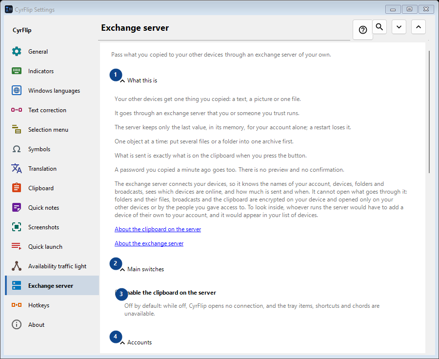
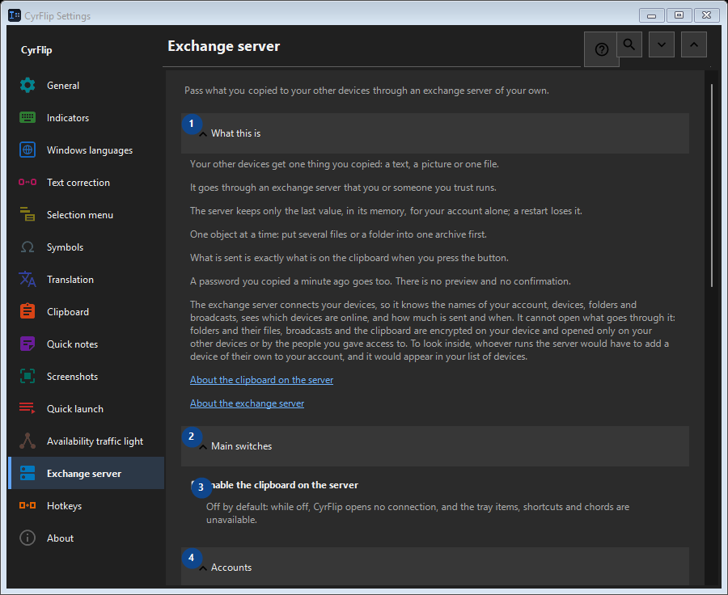

Exchange server
What this is for
Pass what you copied to your other devices through an exchange server of your own.


In this order
Settings apply immediately. There is no required order; use the groups below.
The elements
1. What this is
Use this command when you need the action named above. Review any confirmation before accepting it.
Your shortcuts2. Main switches
Use this command when you need the action named above. Review any confirmation before accepting it.
Your shortcuts3. Enable the clipboard on the server
Off by default: while off, CyrFlip opens no connection, and the tray items, shortcuts and chords are unavailable.
Your shortcuts4. Accounts
Use this command when you need the action named above. Review any confirmation before accepting it.
Your shortcuts5. Add account..
Unavailable while «Enable the clipboard on the server» is off - turn that switch on first. This control is currently unavailable. Enable its feature or select an entry first.
Your shortcuts6. Shortcuts
Use this command when you need the action named above. Review any confirmation before accepting it.
Your shortcuts7. Send clipboard to server
Unavailable while «Enable the clipboard on the server» is off - turn that switch on first. This control is currently unavailable. Enable its feature or select an entry first.
Your shortcuts8. Change - Send clipboard to server
Unavailable while «Enable the clipboard on the server» is off - turn that switch on first. This control is currently unavailable. Enable its feature or select an entry first.
Your shortcuts9. Get clipboard from server
Unavailable while «Enable the clipboard on the server» is off - turn that switch on first. This control is currently unavailable. Enable its feature or select an entry first.
Your shortcuts10. Change - Get clipboard from server
Unavailable while «Enable the clipboard on the server» is off - turn that switch on first. This control is currently unavailable. Enable its feature or select an entry first.
Your shortcuts11. Put "Send" on the desktop
Unavailable while «Enable the clipboard on the server» is off - turn that switch on first. This control is currently unavailable. Enable its feature or select an entry first.
Your shortcuts12. Put "Get" on the desktop
Unavailable while «Enable the clipboard on the server» is off - turn that switch on first. This control is currently unavailable. Enable its feature or select an entry first.
Your shortcuts13. Received files
Use this command when you need the action named above. Review any confirmation before accepting it.
Your shortcuts14. Folder for files received from the server
Unavailable while «Enable the clipboard on the server» is off - turn that switch on first. This control is currently unavailable. Enable its feature or select an entry first.
Your shortcuts15. Choose - Folder for files received from the server
Unavailable while «Enable the clipboard on the server» is off - turn that switch on first. This control is currently unavailable. Enable its feature or select an entry first.
Your shortcuts16. Open folder - Folder for files received from the server
Unavailable while «Enable the clipboard on the server» is off - turn that switch on first. This control is currently unavailable. Enable its feature or select an entry first.
Your shortcuts